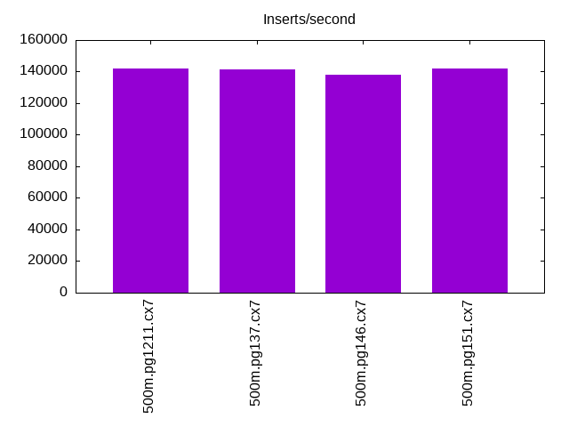
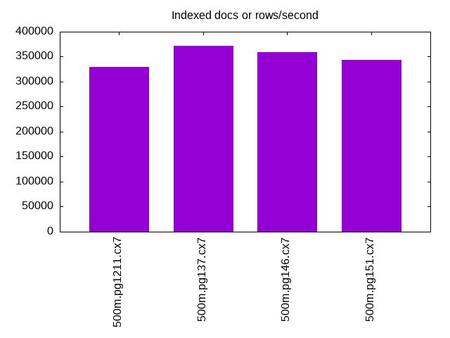
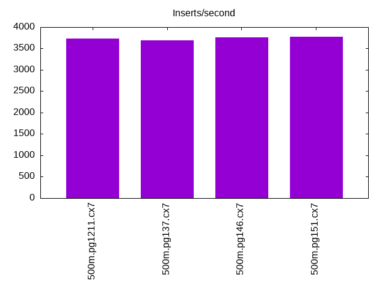
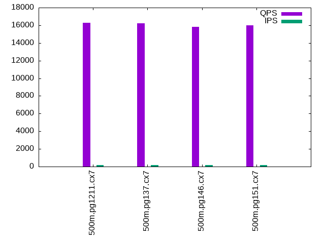
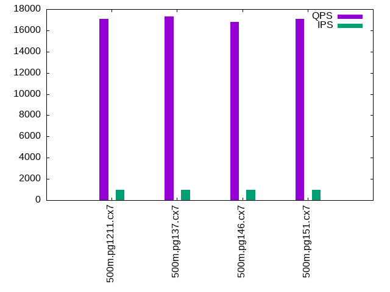
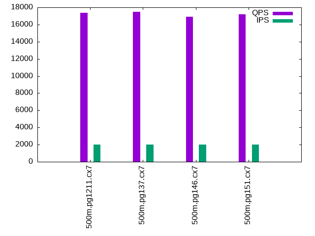

This is a report for the insert benchmark with 500M docs and 2 client(s). It is generated by scripts (bash, awk, sed) and Tufte might not be impressed. An overview of the insert benchmark is here and a short update is here. Below, by DBMS, I mean DBMS+version.config. An example is my8020.c10b40 where my means MySQL, 8020 is version 8.0.20 and c10b40 is the name for the configuration file.
The test server has 8 AMD cores, 16G RAM and an NVMe SSD. It is described here as the Beelink. The benchmark was run with 2 clients and there were 1 or 2 connections per client (1 for queries, 1 for inserts). The benchmark loads 500M rows without secondary indexes, creates secondary indexes, loads another 10M rows then does 3 read+write tests for one hour each that do queries as fast as possible with 100, 500 and then 1000 writes/second/client concurrent with the queries. The database doesn't fit in memory and parts of the benchmark are IO-bound. Clients and the DBMS share one server. The per-database configs are in the per-database subdirectories here.
The tested DBMS are:
The numbers are inserts/s for l.i0 and l.i1, indexed docs (or rows) /s for l.x and queries/s for q*.2. The values are the average rate over the entire test for inserts (IPS) and queries (QPS). The range of values for IPS and QPS is split into 3 parts: bottom 25%, middle 50%, top 25%. Values in the bottom 25% have a red background, values in the top 25% have a green background and values in the middle have no color. A gray background is used for values that can be ignored because the DBMS did not sustain the target insert rate. Red backgrounds are not used when the minimum value is within 80% of the max value.
| dbms | l.i0 | l.x | l.i1 | q100.1 | q500.1 | q1000.1 |
|---|---|---|---|---|---|---|
| 500m.pg1211.cx7 | 142086 | 329013 | 3730 | 16288 | 17074 | 17366 |
| 500m.pg137.cx7 | 141243 | 371269 | 3684 | 16208 | 17319 | 17486 |
| 500m.pg146.cx7 | 138045 | 359009 | 3762 | 15796 | 16794 | 16900 |
| 500m.pg151.cx7 | 142167 | 343004 | 3775 | 16018 | 17055 | 17215 |
This lists the average rate of inserts/s for the tests that do inserts concurrent with queries. For such tests the query rate is listed in the table above. The read+write tests are setup so that the insert rate should match the target rate every second. Cells that are not at least 95% of the target have a red background to indicate a failure to satisfy the target.
| dbms | q100.1 | q500.1 | q1000.1 |
|---|---|---|---|
| pg1211.cx7 | 200 | 999 | 1986 |
| pg137.cx7 | 200 | 999 | 1988 |
| pg146.cx7 | 200 | 999 | 1996 |
| pg151.cx7 | 200 | 999 | 1997 |
| target | 200 | 1000 | 2000 |
l.i0: load without secondary indexes. Graphs for performance per 1-second interval are here.
Average throughput:
Insert response time histogram: each cell has the percentage of responses that take <= the time in the header and max is the max response time in seconds. For the max column values in the top 25% of the range have a red background and in the bottom 25% of the range have a green background. The red background is not used when the min value is within 80% of the max value.
| dbms | 256us | 1ms | 4ms | 16ms | 64ms | 256ms | 1s | 4s | 16s | gt | max |
|---|---|---|---|---|---|---|---|---|---|---|---|
| pg1211.cx7 | 99.998 | 0.001 | nonzero | nonzero | 0.131 | ||||||
| pg137.cx7 | 99.997 | 0.002 | 0.001 | nonzero | nonzero | 0.565 | |||||
| pg146.cx7 | 99.998 | 0.001 | nonzero | nonzero | 0.206 | ||||||
| pg151.cx7 | 99.998 | 0.002 | nonzero | nonzero | 0.188 |
Performance metrics for the DBMS listed above. Some are normalized by throughput, others are not. Legend for results is here.
ips qps rps rmbps wps wmbps rpq rkbpq wpi wkbpi csps cpups cspq cpupq dbgb1 dbgb2 rss maxop p50 p99 tag 142086 0 120 1.0 435.5 56.4 0.001 0.007 0.003 0.407 17188 43.7 0.121 25 47.8 59.1 0.0 0.131 71619 70220 500m.pg1211.cx7 141243 0 110 1.0 323.7 63.7 0.001 0.007 0.002 0.462 17174 44.0 0.122 25 47.8 61.9 0.0 0.565 71050 69553 500m.pg137.cx7 138045 0 110 1.0 326.8 63.3 0.001 0.008 0.002 0.470 16575 44.2 0.120 26 47.8 67.4 0.0 0.206 69256 68023 500m.pg146.cx7 142167 0 112 0.9 326.8 63.9 0.001 0.006 0.002 0.460 17021 44.3 0.120 25 47.8 66.4 0.0 0.188 71422 69923 500m.pg151.cx7
l.x: create secondary indexes.
Average throughput:
Performance metrics for the DBMS listed above. Some are normalized by throughput, others are not. Legend for results is here.
ips qps rps rmbps wps wmbps rpq rkbpq wpi wkbpi csps cpups cspq cpupq dbgb1 dbgb2 rss maxop p50 p99 tag 329013 0 778 91.3 1094.7 147.7 0.002 0.284 0.003 0.460 1218 21.4 0.004 5 91.9 125.6 0.0 0.005 NA NA 500m.pg1211.cx7 371269 0 808 100.0 479.1 109.2 0.002 0.276 0.001 0.301 953 22.4 0.003 5 91.9 108.6 0.0 0.007 NA NA 500m.pg137.cx7 359009 0 778 96.3 449.0 102.3 0.002 0.275 0.001 0.292 990 21.3 0.003 5 91.9 111.5 0.0 0.004 NA NA 500m.pg146.cx7 343004 0 946 116.7 535.9 121.7 0.003 0.349 0.002 0.363 1398 21.2 0.004 5 91.9 113.3 0.0 0.005 NA NA 500m.pg151.cx7
l.i1: continue load after secondary indexes created. Graphs for performance per 1-second interval are here.
Average throughput:
Insert response time histogram: each cell has the percentage of responses that take <= the time in the header and max is the max response time in seconds. For the max column values in the top 25% of the range have a red background and in the bottom 25% of the range have a green background. The red background is not used when the min value is within 80% of the max value.
| dbms | 256us | 1ms | 4ms | 16ms | 64ms | 256ms | 1s | 4s | 16s | gt | max |
|---|---|---|---|---|---|---|---|---|---|---|---|
| pg1211.cx7 | 46.755 | 45.914 | 7.236 | 0.093 | 0.001 | 1.308 | |||||
| pg137.cx7 | 47.411 | 44.889 | 7.573 | 0.128 | 0.845 | ||||||
| pg146.cx7 | 43.735 | 49.126 | 7.085 | 0.053 | 0.804 | ||||||
| pg151.cx7 | 44.882 | 47.828 | 7.235 | 0.055 | 0.720 |
Performance metrics for the DBMS listed above. Some are normalized by throughput, others are not. Legend for results is here.
ips qps rps rmbps wps wmbps rpq rkbpq wpi wkbpi csps cpups cspq cpupq dbgb1 dbgb2 rss maxop p50 p99 tag 3730 0 5297 42.2 6283.4 96.5 1.420 11.584 1.685 26.507 12714 7.9 3.409 169 94.4 121.6 0.0 1.308 1899 250 500m.pg1211.cx7 3684 0 5298 42.9 6325.4 100.8 1.438 11.919 1.717 28.028 12799 8.0 3.474 174 94.4 119.2 0.1 0.845 1848 250 500m.pg137.cx7 3762 0 5397 43.0 6142.1 99.3 1.434 11.694 1.633 27.034 13016 7.8 3.460 166 94.4 126.7 0.0 0.804 1998 549 500m.pg146.cx7 3775 0 5417 43.1 6097.2 98.8 1.435 11.701 1.615 26.802 13087 7.8 3.467 165 94.4 127.5 0.0 0.720 1949 599 500m.pg151.cx7
q100.1: range queries with 100 insert/s per client. Graphs for performance per 1-second interval are here.
Average throughput:
Query response time histogram: each cell has the percentage of responses that take <= the time in the header and max is the max response time in seconds. For max values in the top 25% of the range have a red background and in the bottom 25% of the range have a green background. The red background is not used when the min value is within 80% of the max value.
| dbms | 256us | 1ms | 4ms | 16ms | 64ms | 256ms | 1s | 4s | 16s | gt | max |
|---|---|---|---|---|---|---|---|---|---|---|---|
| pg1211.cx7 | 99.685 | 0.312 | 0.002 | 0.001 | nonzero | 0.035 | |||||
| pg137.cx7 | 99.694 | 0.300 | 0.004 | 0.002 | 0.001 | 0.055 | |||||
| pg146.cx7 | 99.651 | 0.340 | 0.007 | 0.002 | nonzero | nonzero | 0.079 | ||||
| pg151.cx7 | 99.671 | 0.317 | 0.007 | 0.004 | 0.001 | 0.064 |
Insert response time histogram: each cell has the percentage of responses that take <= the time in the header and max is the max response time in seconds. For max values in the top 25% of the range have a red background and in the bottom 25% of the range have a green background. The red background is not used when the min value is within 80% of the max value.
| dbms | 256us | 1ms | 4ms | 16ms | 64ms | 256ms | 1s | 4s | 16s | gt | max |
|---|---|---|---|---|---|---|---|---|---|---|---|
| pg1211.cx7 | 78.931 | 21.062 | 0.007 | 0.083 | |||||||
| pg137.cx7 | 86.299 | 13.549 | 0.111 | 0.042 | 0.980 | ||||||
| pg146.cx7 | 89.569 | 10.375 | 0.056 | 0.088 | |||||||
| pg151.cx7 | 90.222 | 9.604 | 0.167 | 0.007 | 0.269 |
Performance metrics for the DBMS listed above. Some are normalized by throughput, others are not. Legend for results is here.
ips qps rps rmbps wps wmbps rpq rkbpq wpi wkbpi csps cpups cspq cpupq dbgb1 dbgb2 rss maxop p50 p99 tag 200 16288 308 2.5 522.5 7.9 0.019 0.155 2.617 40.670 63443 26.8 3.895 132 94.5 116.1 0.0 0.035 7831 6233 500m.pg1211.cx7 200 16208 317 2.5 640.6 9.0 0.020 0.161 3.208 46.147 63160 26.6 3.897 131 94.5 108.1 0.0 0.055 7767 5865 500m.pg137.cx7 200 15796 317 2.5 671.4 9.2 0.020 0.164 3.362 47.116 61522 26.1 3.895 132 94.5 115.7 0.0 0.079 7527 5242 500m.pg146.cx7 200 16018 316 2.5 686.8 9.4 0.020 0.161 3.439 48.074 62324 26.0 3.891 130 94.5 116.5 0.0 0.064 7787 5370 500m.pg151.cx7
q500.1: range queries with 500 insert/s per client. Graphs for performance per 1-second interval are here.
Average throughput:
Query response time histogram: each cell has the percentage of responses that take <= the time in the header and max is the max response time in seconds. For max values in the top 25% of the range have a red background and in the bottom 25% of the range have a green background. The red background is not used when the min value is within 80% of the max value.
| dbms | 256us | 1ms | 4ms | 16ms | 64ms | 256ms | 1s | 4s | 16s | gt | max |
|---|---|---|---|---|---|---|---|---|---|---|---|
| pg1211.cx7 | 99.837 | 0.159 | 0.004 | nonzero | nonzero | 0.016 | |||||
| pg137.cx7 | 99.839 | 0.156 | 0.004 | nonzero | 0.012 | ||||||
| pg146.cx7 | 99.794 | 0.201 | 0.004 | nonzero | nonzero | 0.038 | |||||
| pg151.cx7 | 99.817 | 0.178 | 0.004 | nonzero | nonzero | 0.029 |
Insert response time histogram: each cell has the percentage of responses that take <= the time in the header and max is the max response time in seconds. For max values in the top 25% of the range have a red background and in the bottom 25% of the range have a green background. The red background is not used when the min value is within 80% of the max value.
| dbms | 256us | 1ms | 4ms | 16ms | 64ms | 256ms | 1s | 4s | 16s | gt | max |
|---|---|---|---|---|---|---|---|---|---|---|---|
| pg1211.cx7 | 67.254 | 31.353 | 1.393 | 0.223 | |||||||
| pg137.cx7 | 68.171 | 30.550 | 1.274 | 0.006 | 0.394 | ||||||
| pg146.cx7 | 66.201 | 32.451 | 1.347 | 0.147 | |||||||
| pg151.cx7 | 66.165 | 32.599 | 1.236 | 0.137 |
Performance metrics for the DBMS listed above. Some are normalized by throughput, others are not. Legend for results is here.
ips qps rps rmbps wps wmbps rpq rkbpq wpi wkbpi csps cpups cspq cpupq dbgb1 dbgb2 rss maxop p50 p99 tag 999 17074 1336 10.6 2032.6 33.5 0.078 0.634 2.035 34.365 68687 28.0 4.023 131 94.8 104.6 0.0 0.016 8326 7432 500m.pg1211.cx7 999 17319 1341 10.6 2044.7 33.5 0.077 0.628 2.048 34.365 69624 28.0 4.020 129 94.8 103.0 0.0 0.012 8558 7607 500m.pg137.cx7 999 16794 1341 10.6 1964.9 32.3 0.080 0.649 1.968 33.091 67572 27.7 4.024 132 94.8 105.3 0.0 0.038 8247 7419 500m.pg146.cx7 999 17055 1341 10.6 1961.8 32.3 0.079 0.639 1.965 33.099 68522 27.7 4.018 130 94.8 105.4 0.0 0.029 8327 7448 500m.pg151.cx7
q1000.1: range queries with 1000 insert/s per client. Graphs for performance per 1-second interval are here.
Average throughput:
Query response time histogram: each cell has the percentage of responses that take <= the time in the header and max is the max response time in seconds. For max values in the top 25% of the range have a red background and in the bottom 25% of the range have a green background. The red background is not used when the min value is within 80% of the max value.
| dbms | 256us | 1ms | 4ms | 16ms | 64ms | 256ms | 1s | 4s | 16s | gt | max |
|---|---|---|---|---|---|---|---|---|---|---|---|
| pg1211.cx7 | 99.741 | 0.252 | 0.006 | 0.001 | nonzero | 0.045 | |||||
| pg137.cx7 | 99.744 | 0.250 | 0.006 | 0.001 | nonzero | 0.054 | |||||
| pg146.cx7 | 99.654 | 0.338 | 0.007 | 0.001 | nonzero | nonzero | 0.128 | ||||
| pg151.cx7 | 99.682 | 0.311 | 0.006 | 0.001 | nonzero | nonzero | 0.125 |
Insert response time histogram: each cell has the percentage of responses that take <= the time in the header and max is the max response time in seconds. For max values in the top 25% of the range have a red background and in the bottom 25% of the range have a green background. The red background is not used when the min value is within 80% of the max value.
| dbms | 256us | 1ms | 4ms | 16ms | 64ms | 256ms | 1s | 4s | 16s | gt | max |
|---|---|---|---|---|---|---|---|---|---|---|---|
| pg1211.cx7 | 69.480 | 26.919 | 3.578 | 0.023 | 0.396 | ||||||
| pg137.cx7 | 69.938 | 26.861 | 3.181 | 0.019 | 0.391 | ||||||
| pg146.cx7 | 62.815 | 33.451 | 3.698 | 0.036 | 0.349 | ||||||
| pg151.cx7 | 62.379 | 34.058 | 3.552 | 0.011 | 0.301 |
Performance metrics for the DBMS listed above. Some are normalized by throughput, others are not. Legend for results is here.
ips qps rps rmbps wps wmbps rpq rkbpq wpi wkbpi csps cpups cspq cpupq dbgb1 dbgb2 rss maxop p50 p99 tag 1986 17366 2664 21.2 3829.5 61.6 0.153 1.248 1.928 31.753 72891 29.6 4.197 136 95.5 109.2 0.0 0.045 8678 7452 500m.pg1211.cx7 1988 17486 2686 21.3 3864.0 62.1 0.154 1.249 1.943 32.001 73338 29.7 4.194 136 95.5 109.3 0.0 0.054 8763 7559 500m.pg137.cx7 1996 16900 2688 21.4 3837.3 61.7 0.159 1.294 1.923 31.657 71120 29.4 4.208 139 95.5 112.2 0.0 0.128 8374 7352 500m.pg146.cx7 1997 17215 2687 21.3 3837.4 61.6 0.156 1.270 1.922 31.591 72236 29.3 4.196 136 95.5 112.2 0.0 0.125 8540 7480 500m.pg151.cx7
l.i0: load without secondary indexes
Performance metrics for all DBMS, not just the ones listed above. Some are normalized by throughput, others are not. Legend for results is here.
ips qps rps rmbps wps wmbps rpq rkbpq wpi wkbpi csps cpups cspq cpupq dbgb1 dbgb2 rss maxop p50 p99 tag 142086 0 120 1.0 435.5 56.4 0.001 0.007 0.003 0.407 17188 43.7 0.121 25 47.8 59.1 0.0 0.131 71619 70220 500m.pg1211.cx7 141243 0 110 1.0 323.7 63.7 0.001 0.007 0.002 0.462 17174 44.0 0.122 25 47.8 61.9 0.0 0.565 71050 69553 500m.pg137.cx7 138045 0 110 1.0 326.8 63.3 0.001 0.008 0.002 0.470 16575 44.2 0.120 26 47.8 67.4 0.0 0.206 69256 68023 500m.pg146.cx7 142167 0 112 0.9 326.8 63.9 0.001 0.006 0.002 0.460 17021 44.3 0.120 25 47.8 66.4 0.0 0.188 71422 69923 500m.pg151.cx7
l.x: create secondary indexes
Performance metrics for all DBMS, not just the ones listed above. Some are normalized by throughput, others are not. Legend for results is here.
ips qps rps rmbps wps wmbps rpq rkbpq wpi wkbpi csps cpups cspq cpupq dbgb1 dbgb2 rss maxop p50 p99 tag 329013 0 778 91.3 1094.7 147.7 0.002 0.284 0.003 0.460 1218 21.4 0.004 5 91.9 125.6 0.0 0.005 NA NA 500m.pg1211.cx7 371269 0 808 100.0 479.1 109.2 0.002 0.276 0.001 0.301 953 22.4 0.003 5 91.9 108.6 0.0 0.007 NA NA 500m.pg137.cx7 359009 0 778 96.3 449.0 102.3 0.002 0.275 0.001 0.292 990 21.3 0.003 5 91.9 111.5 0.0 0.004 NA NA 500m.pg146.cx7 343004 0 946 116.7 535.9 121.7 0.003 0.349 0.002 0.363 1398 21.2 0.004 5 91.9 113.3 0.0 0.005 NA NA 500m.pg151.cx7
l.i1: continue load after secondary indexes created
Performance metrics for all DBMS, not just the ones listed above. Some are normalized by throughput, others are not. Legend for results is here.
ips qps rps rmbps wps wmbps rpq rkbpq wpi wkbpi csps cpups cspq cpupq dbgb1 dbgb2 rss maxop p50 p99 tag 3730 0 5297 42.2 6283.4 96.5 1.420 11.584 1.685 26.507 12714 7.9 3.409 169 94.4 121.6 0.0 1.308 1899 250 500m.pg1211.cx7 3684 0 5298 42.9 6325.4 100.8 1.438 11.919 1.717 28.028 12799 8.0 3.474 174 94.4 119.2 0.1 0.845 1848 250 500m.pg137.cx7 3762 0 5397 43.0 6142.1 99.3 1.434 11.694 1.633 27.034 13016 7.8 3.460 166 94.4 126.7 0.0 0.804 1998 549 500m.pg146.cx7 3775 0 5417 43.1 6097.2 98.8 1.435 11.701 1.615 26.802 13087 7.8 3.467 165 94.4 127.5 0.0 0.720 1949 599 500m.pg151.cx7
q100.1: range queries with 100 insert/s per client
Performance metrics for all DBMS, not just the ones listed above. Some are normalized by throughput, others are not. Legend for results is here.
ips qps rps rmbps wps wmbps rpq rkbpq wpi wkbpi csps cpups cspq cpupq dbgb1 dbgb2 rss maxop p50 p99 tag 200 16288 308 2.5 522.5 7.9 0.019 0.155 2.617 40.670 63443 26.8 3.895 132 94.5 116.1 0.0 0.035 7831 6233 500m.pg1211.cx7 200 16208 317 2.5 640.6 9.0 0.020 0.161 3.208 46.147 63160 26.6 3.897 131 94.5 108.1 0.0 0.055 7767 5865 500m.pg137.cx7 200 15796 317 2.5 671.4 9.2 0.020 0.164 3.362 47.116 61522 26.1 3.895 132 94.5 115.7 0.0 0.079 7527 5242 500m.pg146.cx7 200 16018 316 2.5 686.8 9.4 0.020 0.161 3.439 48.074 62324 26.0 3.891 130 94.5 116.5 0.0 0.064 7787 5370 500m.pg151.cx7
q500.1: range queries with 500 insert/s per client
Performance metrics for all DBMS, not just the ones listed above. Some are normalized by throughput, others are not. Legend for results is here.
ips qps rps rmbps wps wmbps rpq rkbpq wpi wkbpi csps cpups cspq cpupq dbgb1 dbgb2 rss maxop p50 p99 tag 999 17074 1336 10.6 2032.6 33.5 0.078 0.634 2.035 34.365 68687 28.0 4.023 131 94.8 104.6 0.0 0.016 8326 7432 500m.pg1211.cx7 999 17319 1341 10.6 2044.7 33.5 0.077 0.628 2.048 34.365 69624 28.0 4.020 129 94.8 103.0 0.0 0.012 8558 7607 500m.pg137.cx7 999 16794 1341 10.6 1964.9 32.3 0.080 0.649 1.968 33.091 67572 27.7 4.024 132 94.8 105.3 0.0 0.038 8247 7419 500m.pg146.cx7 999 17055 1341 10.6 1961.8 32.3 0.079 0.639 1.965 33.099 68522 27.7 4.018 130 94.8 105.4 0.0 0.029 8327 7448 500m.pg151.cx7
q1000.1: range queries with 1000 insert/s per client
Performance metrics for all DBMS, not just the ones listed above. Some are normalized by throughput, others are not. Legend for results is here.
ips qps rps rmbps wps wmbps rpq rkbpq wpi wkbpi csps cpups cspq cpupq dbgb1 dbgb2 rss maxop p50 p99 tag 1986 17366 2664 21.2 3829.5 61.6 0.153 1.248 1.928 31.753 72891 29.6 4.197 136 95.5 109.2 0.0 0.045 8678 7452 500m.pg1211.cx7 1988 17486 2686 21.3 3864.0 62.1 0.154 1.249 1.943 32.001 73338 29.7 4.194 136 95.5 109.3 0.0 0.054 8763 7559 500m.pg137.cx7 1996 16900 2688 21.4 3837.3 61.7 0.159 1.294 1.923 31.657 71120 29.4 4.208 139 95.5 112.2 0.0 0.128 8374 7352 500m.pg146.cx7 1997 17215 2687 21.3 3837.4 61.6 0.156 1.270 1.922 31.591 72236 29.3 4.196 136 95.5 112.2 0.0 0.125 8540 7480 500m.pg151.cx7
Insert response time histogram
256us 1ms 4ms 16ms 64ms 256ms 1s 4s 16s gt max tag 0.000 0.000 99.998 0.001 nonzero nonzero 0.000 0.000 0.000 0.000 0.131 pg1211.cx7 0.000 0.000 99.997 0.002 0.001 nonzero nonzero 0.000 0.000 0.000 0.565 pg137.cx7 0.000 0.000 99.998 0.001 nonzero nonzero 0.000 0.000 0.000 0.000 0.206 pg146.cx7 0.000 0.000 99.998 0.002 nonzero nonzero 0.000 0.000 0.000 0.000 0.188 pg151.cx7
TODO - determine whether there is data for create index response time
Insert response time histogram
256us 1ms 4ms 16ms 64ms 256ms 1s 4s 16s gt max tag 0.000 0.000 0.000 46.755 45.914 7.236 0.093 0.001 0.000 0.000 1.308 pg1211.cx7 0.000 0.000 0.000 47.411 44.889 7.573 0.128 0.000 0.000 0.000 0.845 pg137.cx7 0.000 0.000 0.000 43.735 49.126 7.085 0.053 0.000 0.000 0.000 0.804 pg146.cx7 0.000 0.000 0.000 44.882 47.828 7.235 0.055 0.000 0.000 0.000 0.720 pg151.cx7
Query response time histogram
256us 1ms 4ms 16ms 64ms 256ms 1s 4s 16s gt max tag 99.685 0.312 0.002 0.001 nonzero 0.000 0.000 0.000 0.000 0.000 0.035 pg1211.cx7 99.694 0.300 0.004 0.002 0.001 0.000 0.000 0.000 0.000 0.000 0.055 pg137.cx7 99.651 0.340 0.007 0.002 nonzero nonzero 0.000 0.000 0.000 0.000 0.079 pg146.cx7 99.671 0.317 0.007 0.004 0.001 0.000 0.000 0.000 0.000 0.000 0.064 pg151.cx7
Insert response time histogram
256us 1ms 4ms 16ms 64ms 256ms 1s 4s 16s gt max tag 0.000 0.000 0.000 78.931 21.062 0.007 0.000 0.000 0.000 0.000 0.083 pg1211.cx7 0.000 0.000 0.000 86.299 13.549 0.111 0.042 0.000 0.000 0.000 0.980 pg137.cx7 0.000 0.000 0.000 89.569 10.375 0.056 0.000 0.000 0.000 0.000 0.088 pg146.cx7 0.000 0.000 0.000 90.222 9.604 0.167 0.007 0.000 0.000 0.000 0.269 pg151.cx7
Query response time histogram
256us 1ms 4ms 16ms 64ms 256ms 1s 4s 16s gt max tag 99.837 0.159 0.004 nonzero nonzero 0.000 0.000 0.000 0.000 0.000 0.016 pg1211.cx7 99.839 0.156 0.004 nonzero 0.000 0.000 0.000 0.000 0.000 0.000 0.012 pg137.cx7 99.794 0.201 0.004 nonzero nonzero 0.000 0.000 0.000 0.000 0.000 0.038 pg146.cx7 99.817 0.178 0.004 nonzero nonzero 0.000 0.000 0.000 0.000 0.000 0.029 pg151.cx7
Insert response time histogram
256us 1ms 4ms 16ms 64ms 256ms 1s 4s 16s gt max tag 0.000 0.000 0.000 67.254 31.353 1.393 0.000 0.000 0.000 0.000 0.223 pg1211.cx7 0.000 0.000 0.000 68.171 30.550 1.274 0.006 0.000 0.000 0.000 0.394 pg137.cx7 0.000 0.000 0.000 66.201 32.451 1.347 0.000 0.000 0.000 0.000 0.147 pg146.cx7 0.000 0.000 0.000 66.165 32.599 1.236 0.000 0.000 0.000 0.000 0.137 pg151.cx7
Query response time histogram
256us 1ms 4ms 16ms 64ms 256ms 1s 4s 16s gt max tag 99.741 0.252 0.006 0.001 nonzero 0.000 0.000 0.000 0.000 0.000 0.045 pg1211.cx7 99.744 0.250 0.006 0.001 nonzero 0.000 0.000 0.000 0.000 0.000 0.054 pg137.cx7 99.654 0.338 0.007 0.001 nonzero nonzero 0.000 0.000 0.000 0.000 0.128 pg146.cx7 99.682 0.311 0.006 0.001 nonzero nonzero 0.000 0.000 0.000 0.000 0.125 pg151.cx7
Insert response time histogram
256us 1ms 4ms 16ms 64ms 256ms 1s 4s 16s gt max tag 0.000 0.000 0.000 69.480 26.919 3.578 0.023 0.000 0.000 0.000 0.396 pg1211.cx7 0.000 0.000 0.000 69.938 26.861 3.181 0.019 0.000 0.000 0.000 0.391 pg137.cx7 0.000 0.000 0.000 62.815 33.451 3.698 0.036 0.000 0.000 0.000 0.349 pg146.cx7 0.000 0.000 0.000 62.379 34.058 3.552 0.011 0.000 0.000 0.000 0.301 pg151.cx7